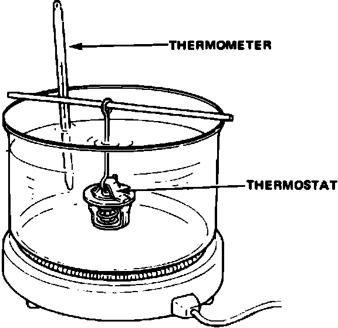

Thermostat: Testing and Inspection
Thermostat Testing:

NOTE: Replace the thermostat if it is open at room temperature.
To test a closed thermostat:
1. Suspend the thermostat in a container of water as shown.
2. Heat the water and check the temperature with a thermometer. Check the temperature at which the thermostat first opens, and at which it is fully open.
CAUTION: Do not let the thermometer touch the bottom of hot container.
3. Measure lift height of the thermostat when fully open.
STANDARD THERMOSTAT
Lift height: above 8.0 mm (0.31 in)
Starts opening: 169 - 176°F (76 - 8O°C)
Fully open: 194°F (90°C)